건축기사 (2008-03-02 기출문제)
1과목: 건축계획
1. 아파트의 각종 평면형식에 대한 설명 중 옳은 것은?
- 편복도형은 통풍 및 채광상 가장 불리한 형식이다.
- 중복도형은 공사비가 많이 들지만 각 세대마다 독립성과 통풍이 좋다.
- 계단실형은 통행부 면적이 작아서 건물의 이용도가 높다.
- 집중형은 모든 실을 남향으로 할 수 있어 채광상 유리하다.
(정답률: 81%)

2. 다음 중 극장의 음향계획에서 극장 측면벽에 사용되는 재료에 대한 설명으로 가장 알맞은 것은?
- 무대쪽 벽은 반사재, 객석쪽 벽은 흡음재
- 무대쪽 벽은 흡음재, 객석쪽 벽은 반사재
- 모두 반사재
- 모두 흡음재
(정답률: 78%)
3. 다음의 주택계획에 관한 설명 중 틀린 것은?
- 부엌은 사용시간이 길고 부패하기 쉬운 물건을 많이 수장하는 곳이므로 서향은 피하는 것이 좋다.
- 50m2이하의 소규모 주택에서는 복도를 두는 것이 공간활용상 경제적이다.
- 주택의 규모가 비교적 적을 때에는 거실과 식사 부분을 동일공간으로 처리하여도 좋다.
- 현관의 크기는 주택의 규모와 가족의 수, 그리고 방문객의 예상 수 등을 고려한 출입량에 중점을 두는 것이 타당하다.
(정답률: 85%)
4. 건축 모듈(Module)에 대한 설명으로 옳지 않은 것은?
- 양산의 목적과 공업화를 위해 사용된다.
- 모든 치수의 수직과 수평이 황금비를 이루도록 하는 것이다.
- 복합 모듈은 기본 모듈이 배수로서 정한다.
- 모듈 설정시 설계작업이 단순화된다.
(정답률: 72%)
5. 다음 근대건축의 작가와 작품 중 아르누보(Art Noubeau)의 영역 이외의 것은?
- 윌리엄 모리스 - 붉은 집(Red House)
- 안토니오 가우디 - 스페인의 사그리다 파밀리아
- 핵토르 기마르 - 파리의 지하철역 입구
- 빅터 오르타 - 타셀 주택
(정답률: 46%)
6. 다음과 같은 특징을 갖는 부엌의 평면형은?
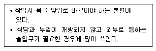
- 일렬형
- ㄱ자형
- 병렬형
- ㄷ자형
(정답률: 83%)
7. 필요 공기량을 산정하여 침실의 규모를 산정하려고 한다. 성인 2인용 침실의 최소 바닥면적은? (단, 실내 자연화기 횟수 2회/hr, 천장고 2.5m)
- 10m2
- 15m2
- 20m2
- 25m2
(정답률: 50%)
8. 은행건축에 관한 기술 중 부적당한 것은?
- 일반적으로 출입문은 안여닫이로 함이 타당하다.
- 은행실은 고객대기실과 영업실로 나누어지며 은행의 주체를 이루는 곳이다.
- 영업실의 면적은 은행원 1인당 최소 20m2이상 되어야 한다.
- 금고실은 고객대기실에서 떨어진 위치에 둔다.
(정답률: 92%)
9. 다음 중 서로 가장 관계가 깊은 것들의 연결이 옳게 조합되어 있는 것은?
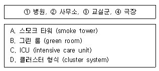
- ①-A, ②-D, ③-B, ④-C
- ①-C, ②-A, ③-D, ④-B
- ①-C, ②-A, ③-B, ④-D
- ①-B, ②-A, ③-D, ④-C
(정답률: 86%)
10. 다음 중 고딕건축의 특성을 표현하는 용어와 가장 관계가 먼 것은?
- 플라잉 버트레스(flying buttress)
- 리브 볼트(rib vault)
- 첨두형 아치(pointed arch)
- 미나렛(minaret)
(정답률: 60%)
11. 사무소 건축의 지하 주차장을 다음과 같이 계획하였을 때 적합하지 않은 것은? (단, 주차형식은 직각 주차임)
- 경사 램프의 구배는 1/8로 하였다.
- 차로의 너비를 6m로 하였다.
- 차고의 기둥 간격은 4.5m×7m로 하였다.
- 주차장 내의 동선은 일방통행을 원칙으로 하였다.
(정답률: 58%)
12. 도서관 건축계획에 관한 설명으로 옳지 않은 것은?
- 아동열람실은 폐가식이 적당하다.
- 서고는 증축할 여지를 남기도록 계획한다.
- 서고는 대부분 자연채광 대신 인공조명을 사용한다.
- 서고내 서가의 배열은 평행 직선식으로 하는 것이 일반적이다.
(정답률: 77%)
13. 다음 중 병원의 수술부와 직접 관계가 없는 실은?
- 세척실
- 회복실
- 갱의실
- 처치실
(정답률: 46%)
14. 학교 건축계획에서 그림과 같은 평면 유형을 갖는 학교 운영방식은?
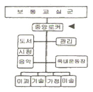
- 달톤형
- 플래툰형
- 교과교실형
- 종합교실형
(정답률: 66%)
15. 초등학교 건축계획에 관한 사항 중 맞는 것은?
- 고학년 교실은 종합교실형으로 계획하는 것이 가장 좋다.
- 계단의 단높이는 18cm 이하, 단너비는 25cm 이상으로 하는 것이 좋다.
- 교지 부근의 소음이 120dB(A) 이하여야 하며 그 이상일 경우 방지대책을 세워야 한다.
- 교실에서 피난층 또는 지상으로 통하는 직통계단에 이르는 보행거리가 30m 이하가 되도록 한다.
(정답률: 60%)
16. 미술관 관람객 동선에 대한 설명 중 적절하지 못한 것은?
- 승강이 어려운 장애자를 고려하여 바닥레벨이 자주 바뀌는 것은 좋지 않다.
- 관리목적상 현관내에서 입구와 출구를 별도로 두지 않는다.
- 일방통행으로 관람하는 것이 원칙이며 단조롭지 않도록 독립전시와 벽면전시를 병행하여 변화를 준다.
- 전시공간의 동선계획은 규모, 위치조건, 공간구성요소의 조건이나 배치에 따라 결정된다.
(정답률: 81%)
17. 종합병원 건축계획에 대한 설명 중 옳지 않은 것은?
- 우리나라의 일반적인 외래진료방식은 오픈 시스템이며 대규모의 각종 과를 필요로 한다.
- 1개의 간호사 대기소에서 관리할 수 있는 병상수는 30~40개 이하로 한다.
- 병실의 창문은 환자가 병상에서 외부를 전망할 수 있게 하는 것이 좋다.
- 수술실의 바닥마감은 전기도체성 마감을 사용하는 것이 좋다.
(정답률: 80%)
18. 건축공간의 치수는 인간을 기준으로 볼 때 3가지로 나누어서 생각할 수 있다. 다음 중 이 3가지 분류에 포함되지 않는 것은?
- 환경적 스케일
- 심리적 스케일
- 생리적 스케일
- 물리적 스케일
(정답률: 63%)
19. 백화점 건축의 세부 계획에 관한 다음 사항 중 가장 부적당한 것은?
- 매장 면적의 연면적에 대한 비율 : 60~70%
- 고객용 변기 수 : 매장 면적 2000m2마다 1개
- 매장안의 고객통로의 폭 : 1.8m 이상
- 종업원 수 : 연면적 18~22m2에 대해서 1명
(정답률: 64%)
20. 극장의 무대계획에 관한 설명을 옳지 않은 것은?
- 에이프런 스테이지는 막을 경계로 하여 객석쪽으로 나온 부분의 무대이다.
- 사이클로라마의 높이는 프로시니엄 높이의 3배 정도로 한다.
- 무대 상부공간(fly loft)의 높이는 프로시니엄 높이의 4배 이상으로 한다.
- 무대의 깊이는 프로시니엄 아치 폭보다 작게 한다.
(정답률: 47%)
2과목: 건축시공
21. 공동도급(joint venture)방식의 장점에 대한 설명으로 옳지 않은 것은?
- 2 이상의 업자가 공동으로 도급하므로 자금부담이 경감된다.
- 대규모 공사를 단독으로 도급하는 것보다 적자 등 위험부담의 분산이 가능하다.
- 공동도급 구성원 상호간의 이해충돌이 없고 현장관리가 용이하다.
- 각 구성원이 공사에 대하여 연대책임을 지므로, 단독도급에 비해 발주자는 더 큰 안전성을 기대할 수 있다.
(정답률: 81%)
22. 다음 중 표준관입시험에 대한 설명으로 옳은 것은?
- 점토지반에서는 표준관입시험을 행할 수 없다.
- 추의 낙하높이는 100cm 이다.
- 지반의 전단강도를 직접 측정하는 방법이다.
- N값은 샘플러를 30cm 관입하는데 소요되는 타격회수이다.
(정답률: 61%)
23. 계약 방식의 종류 중 단가계약 제도에 관한 설명으로 잘못된 것은?
- 실시수량의 확정에 따라서 차후 정산하는 방식이다.
- 긴급공사시 또는 수량이 불명확할 때에 간단히 계약할 수 있다.
- 설계변경에 의한 수량의 증감이 용이하다.
- 공사비를 절감할 수 있으며, 복잡한 공사에 적용하는 것이 좋다.
(정답률: 60%)
24. 말뚝이 지지력을 확인하는데 가장 신뢰성이 있는 시험 방법은?
- 전단시험
- 재하시험
- 표준관입시험
- 지내력시험
(정답률: 46%)
25. Net Work(네트웍) 공정표의 장점이라고 볼 수 없는 것은?
- 작업 상호간의 관련성 파악이 용이하다.
- 진도 관리를 명확하게 실시할 수 있으며 적절한 조치를 취할 수 있다.
- 계획관리면에서 신뢰도가 높고 전산기 이용이 가능하다.
- 작성 및 검사에 특별한 기능이 필요없고 경험이 없는 사람도 쉽게 작성할 수 있다.
(정답률: 82%)
26. 페인트칠의 경우 초벌과 재벌 등은 도장할 때마다 색을 약간씩 다르게 하는데 그 가장 큰 이유는?
- 희망하는 색을 얻기 위하여
- 색이 진하게 되는 것을 방지하기 위하여
- 착색안료를 낭비하지 않고 경제적으로 하기 위하여
- 다음 칠을 하였는지 안하였는지 구별하기 위하여
(정답률: 82%)
27. 콘크리트의 내부 진동기(internal vibrator)사용법에 대한 설명으로 옳지 않은 것은?
- 전동기는 연직으로 찔러 넣는다.
- 1개소에 대한 진동시간은 1분이상 사용하는 것이 좋다.
- 진동기의 삽입간격을 일반적으로 50cm 이하로 하는 것이 좋다.
- 진동기는 콘크리트로부터 천천히 빼내어 구멍이 남지 않도록 한다.
(정답률: 58%)
28. 벽돌벽에 장식적으로 구명을 내어 쌓는 벽돌쌓기 방식은?
- 엇모쌓기
- 영롱쌓기
- 무늬쌓기
- 층단떼어쌓기
(정답률: 73%)
29. 철골공사 접합 중 용접에 대한 주의사항으로 틀린 것은?
- 현장용접을 하는 부재는 그 용접부위에 얇은 에나멜 페인트 이외의 칠을 해서는 안된다.
- 용접봉의 교한 또는 다층용접일 때에는 먼저 슬래그를 제거하고 청소한 후 용접한다.
- 용접할 소재는 용접에 의한 수축변형이 생기고, 또 마무리 작업도 고려해야되므로 치수에 여분을 두어야 한다.
- 용접이 완료되면 슬래그 및 스패터를 제거하고 청소한다.
(정답률: 60%)
30. 건축공사중 타일공사에 관한 내용으로 가장 부적합하게 서술된 것은 ?
- 내장타일은 자기질, 석기질, 도기질이 모두 사용되며 외장타일은 자기질, 석기질이 사용된다.
- 타일붙임 모르타르 붙임면 뒤에 틈이 남아 있으면 빗물의 침입으로 백화의 원인이 되므로 주의한다.
- 외장타일은 외기에 저항력이 강하고 단단하며, 흡수성이 큰 것이 좋다.
- 타일을 붙일 때에는 시멘트모르타르를 사용하거나 접착제를 사용하며 타일용 접착제는 초기의 접착성이 높은 것이 좋다.
(정답률: 59%)
31. 콘크리트의 creep에 관한 설명으로 잘못된 것은?
- 물-시멘트 비가 클수록 creep는 크다.
- 습도가 높을수록 creep는 크다.
- 콘크리트의 배합과 골재의 종류는 creep에 영향을 준다.
- 사용된 시멘트의 종류에 따라 creep의 양은 달라진다.
(정답률: 56%)
32. 문 윗틀과 문짝에 설치하여 문이 자동적으로 닫혀지게 하며, 기계장치가 있어 개폐속도를 조절할 수 있는 방치는?
- 도어 체크
- 도어 홀더
- 피보트 힌지
- 체인 록
(정답률: 78%)
33. 품질관리에 있어서 통계적수법을 활용할 때의 유의사항으로 옳지 않은 것은?
- 사실을 나타내는 올바른 데이터를 사용할 것
- 간단한 수법을 효율적으로 사용할 것
- 통계적 수법을 사용하여 나온 결론을 학문적으로 표현 할 것
- 통계적 수법의 활용과 아울러 문제해결을 위한 기술적인 뒷받침이 있을 것
(정답률: 72%)
34. 철골조 건축물의 연면적이 1,000m2일 때의 개산 철골량으로 옳은 것은?
- 40~60 ton
- 60~80 ton
- 80~100 ton
- 100~150 ton
(정답률: 40%)
35. 국내에서 사용되는 일반적인 콘크리트에는 공기량 확보를 위해 AE재를 혼화제로서 사용하도록 한국산업규격 및 콘크리트표준시방서에서 규정하고 있다. 이때 AE제의 사용목적 중 가장 중요한 것은?
- 동결융해의 저항성 확보를 위해
- 물-시멘트 비의 감소를 위해
- 소요 압축강도의 확보를 위해
- 콘크리트의 내마모성 향상을 위해
(정답률: 50%)
36. 다음 중 연약 지반개량 공법에 해당하지 않는 것은?
- 웰포인트공법
- 샌드 드레인공법
- 폭파다짐공법
- 심초공법
(정답률: 53%)
37. 다음 중 건축공사 표준시방서에서 규정된 고강도 콘크리트의 설계기준강도로 맞는 것은?
- 보통 콘크리트 - 40MPa 이상, 경량골재콘크리트 - 24MPa 이상
- 보통 콘크리트 - 40MPa 이상, 경량골재콘크리트 - 27MPa 이상
- 보통 콘크리트 - 33MPa 이상, 경량골재콘크리트 - 21MPa 이상
- 보통 콘크리트 - 33MPa 이상, 경량골재콘크리트 - 24MPa 이상
(정답률: 65%)
38. 토량 470m3를 불도져로 작업하려고 한다. 작업을 완료할 수 있는 시간을 산출하였을 때 맞는 시간은? (단 불도져의 삽날용량은 1.2m3, 토량환산 계수는 0.8, 작업효율은 0.8, 1회 싸이클 시간은 12분이다.)
- 120.40시간
- 122.40시간
- 132.40시간
- 140.40시간
(정답률: 64%)
39. 인텔리전트빌딩 및 전자계산실에서 배선ㆍ배관 등이 복잡한 공간의 바닥구성재료로 적합한 것은?
- 복합바닥(compos floor)
- 와플바닥
- 액서스플로어
- 장선바닥
(정답률: 59%)
40. 콘크리트 표준시방서에 의한 혼합시간으로서, 재료 투입후 가경식 믹서는 최소 얼마이상 혼합하는 것을 표준으로 하는가? (단, 비비기 시간에 대한 시험을 실시하지 않은 경우)
- 30초
- 45초
- 60초
- 90초
(정답률: 36%)
3과목: 건축구조
41. 1방향 철근콘크리트 슬래브에 관한 설명 중 옳은 것은?
- 1방향 슬래브에서는 정철근 및 부철근에 평행하게 수축ㆍ온도철근을 배치한다.
- 슬래브 끝의 단순받침부에는 철근을 배치하면 안된다.
- 슬래브의 정철근 및 부철근의 중심간격은 600mm 이하로 하여야 한다.
- 1방향 슬래브의 두께는 최고 100mm 이상으로 하여야 한다.
(정답률: 30%)
42. 철근콘크리트 구조에 관한 기술 중 틀린 것은?
- 철근과 콘크리트의 선팽창계수는 거의 같다.
- 철근과 콘크리트의 응력전달은 철근표면의 부착력에 의한다.
- 철근과 콘크리트의 응력분담은 각각의 단면적비에 의한다.
- 균형철근비 이상의 인장철근을 갖는 보는 콘크리트가 먼저 허용응력도에 달한다.
(정답률: 33%)
43. 강구조에서 접합 방법을 병용했을 때의 다음 기술 중 옳지 못한 것은?
- 고력볼트와 리벳을 병용하는 경우 각각의 허용응력에 따라 응력을 분담시킨다.
- 리벳과 볼트를 병용하는 경우 전응력을 리벳이 부담한다.
- 리벳과 용접을 병용하는 경우 전응력을 용접이 부담한다.
- 고력볼트와 용접을 병용하는 경우 전응력을 고력볼트가 부담한다.
(정답률: 40%)
44. 강구조에 관한 설명으로 옳지 않은 것은?
- 고열에 강하며, 내화성이 높다.
- 철근콘크리트 구조에 비해 경량이다.
- 수평력에 대해 강하다.
- 대규모 건축물이 가능하다.
(정답률: 61%)
45. 그림과 같은 구조물은?
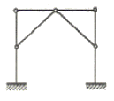
- 불안정 구조물
- 안정이며, 정정구조물
- 안정이며, 1차 부정정구조물
- 안정이며, 2차 부정정구조물
(정답률: 57%)
46. 그림과 같은 구조물의 반력은?
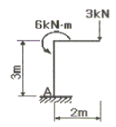
- HA=3kN, VA=0, MA=6kNㆍm
- HA=0, VA=3kN, MA=6kNㆍm
- HA=3kN, VA=0, MA=0
- HA=0, VA=3kN, MA=0
(정답률: 45%)
47. H형강을 사용한 길이 6m인 단순보에 5kN/m의 등분포 하중 재하시 최대처짐량은? (단, Es=206,000MPa, Ix=4720cm4, 좌굴의 영향은 없는 것으로 가정)
- 1.70mm
- 5.69mm
- 8.68mm
- 12.49mm
(정답률: 47%)
48. 플랜지에 작용하는 전단력으로 인해 비틀림 모멘트가 생기게 되므로 부재가 비틀림이 없이 휨을 받으려면, 하중의 작용선이 단면의 어느 특정 지점을 지나야 한다. 이 점을 무엇이라 하는가?
- 전단중심
- 하중중심
- 강성중심
- 무게중심
(정답률: 66%)
49. 그림과 같은 하중을 받는 기초에서 기초 지반면에 일어나는 최대 및 최소 접지압으로 옳게 짝지어진 것은?
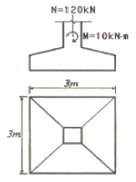
- σmax = 13.3 kN/m2, σmin = 2.2 kN/m2
- σmax = 15.5 kN/m2, σmin = 11.1 kN/m2
- σmax = 26.6 kN/m2, σmin = 4.4 kN/m2
- σmax = 31.0 kN/m2, σmin = 22.2 kN/m2
(정답률: 52%)
50. 직사각형 단명의 중심을 지나는 X축에 대한 단면 2차반경은?
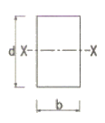
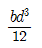
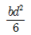
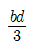
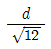
(정답률: 41%)
51. 천판 두께가 25mm 인 SM 490 강재의 허용응력도를 결정하는 기준값 fy는 얼마인가?
- 215 N/mm2
- 235 N/mm2
- 295 N/mm2
- 315 N/mm2
(정답률: 28%)
52. 외력에 의해 발생하는 부재내의 응력에 대응하여 미리 부재내에 응력을 넣어 외력에 대응토록 하는 원리로 만든 구조는?
- 입체트러스구조
- 현수식구조
- 프리스트레스트구조
- 프리캐스트구조
(정답률: 74%)
53. 다음의 말뚝에 관한 설명 중 틀린 것은?
- 말뚝은 지지하는 상태에 따라 지지말뚝과 마찰말뚝으로 대별된다.
- 말뚝기초의 내력은 말뚝의 지지력과 지반의 지내력의 합계가 되지만 일반적으로 말뚝의 지지력은 무시한다.
- 말뚝의 지지력은 일반적으로 시일이 경과함에 따라 증가한다.
- 지지말뚝의 경우 말뚝저항의 중심은 말뚝의 끝에 있다.
(정답률: 59%)
54. 그림과 같은 보에서 콘크리트가 부담할 수 있는 전단강도를 강도설계법으로 구하면 얼마인가? (단, fck=21MPa, fy=400MPa, ∅=0.75)
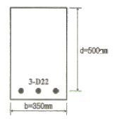
- 31.1kN
- 62.1kN
- 100.2kN
- 114.2kN
(정답률: 41%)
55. 탄성계수가 104kN/cm2이고 균일한 단면을 가진 부재에 인장력이 작용하여 1kN/cm2의 인장응력도가 발생하였다. 이 때 부재의 길이가 0.5mm 증가하였다면 부재의 원래의 길이는?
- 4m
- 5m
- 8m
- 10m
(정답률: 50%)
56. 동일한 주기, 중량, 그리고 중요도 계수를 가지는 구조물중 가장 작은 크기의 지진하중으로 설계할 수 있는 구조 시스템은?
- 철근콘크리트 전단벽 시스템
- 철근콘크리트 중간 모멘트 골조
- 철골 편심가새골조
- 철근보강 조적 전단벽
(정답률: 38%)
57. 단면의 도심을 지나는 X축에 대한 단면2차모멘트(Ix)와 Y축에 대한 단면2차모멘트(IY)가 같기 위해서 Y축에서 떨어진 거리 x0는 얼마인가? (단, h=2b)
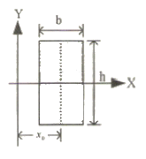
- b/4
- b/3
- b/2
- b
(정답률: 59%)
58. 도심축에 대한 빗줄친 부분의 단면계수 값은?
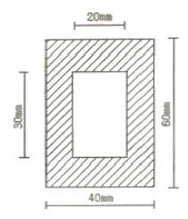
- 19000 ㎣
- 2⑤00 ㎣
- 21000 ㎣
- 22500 ㎣
(정답률: 38%)
59. 강도 설계법에서 fy=400MPa, d=550mm인 철근콘크리트 단근 직사각형 균형보의 중립축거리(Cb)로 알맞은 값은? (단, Es=20.×105MPa)
- 300mm
- 330mm
- 350mm
- 370mm
(정답률: 49%)
60. 등분포하중을 받는 단순지지 철골보 H-700×300×13×24(A=235.5cm2, Ix=201,000cm4)의 하부 플랜지 양쪽이 1⑤cm씩 절단(하주 플랜지 폭이 270mm로 됨)되었을 때의 설명 중 적당한 것은?
- 보의 중립축은 하부로 이동한다.
- 하부 플랜지 응력은 작아진다.
- 상부 플랜지 응력은 원래와 동일하다.
- 상부 플랜지쪽 단면계수의 감소량이 하부보다 작다.
(정답률: 32%)
4과목: 건축설비
61. 공기의 성질에 관한 설명 중 옳지 않은 것은?
- 공기를 가열하면 상대습도는 낮아진다.
- 공기를 냉각하면 절대습도는 높아진다.
- 건구온도와 습구온도가 동일하면 상대습도는 100% 이다.
- 습구온도는 건구온도보다 높을 수는 없다.
(정답률: 73%)
62. 옥내 배선에서 간선의 배선방식에 속하지 않는 것은?
- 평행식
- 나무가지식
- 나무가지평행식
- 시그널 콘트롤식
(정답률: 70%)
63. 자동화재탐지설비에 관한 기술 중 옳지 않은 것은?
- 차동식 감지기는 주위온도가 일정한 온도 상승률 이상이 되었을 때 작동하는 감지기이다.
- 정온식 감지기는 주위온도가 일정한 온도 이상이 되었을 때 동작하는 것으로 보일러실 등에 설치한다.
- 이온화식 감지기는 감지기 주위의 공기가 일정한 농도의 연기를 포함하게 되면 작동하는 감지기이다.
- 광전식 감지기는 차동식 감지기와 정온식 감지기의 기능을 합친 것이다.
(정답률: 60%)
64. 온수난방의 일반적인 특징에 대한 설명 중 옳지 않을 것은?
- 현열을 이용한 난방이므로 증기난방에 비해 쾌감도가 높다.
- 난방 부하의 변동에 따라 온수 온도의 순환수량을 쉽게 조절할 수 있다.
- 한랭시 난방을 정지하였을 경우에도 동결의 우려가 없다.
- 난방을 정지하여도 난방 효과가 어느 정도 지속된다.
(정답률: 74%)
65. 터보 냉동기의 특징에 대한 설명 중 옳지 않은 것은?
- 임펠러 외전에 의한 원심력으로 냉매가스를 압축한다.
- 일반적으로 대용량에는 부적합하며 비례제어가 불가능한다.
- 30% 이하의 출력에서는 서징(surging)현상이 일어나므로 운전이 곤란하다.
- 왕복동식에 비하여 진동이 적다.
(정답률: 49%)
66. 다음의 중수도에 관한 설명 중 틀린 것은?
- 중수도 원수로는 주로 잡용수가 사용되지만 냉각배수, 하수처리수 등도 사용된다.
- 일반하수뿐만 아니라 빗물도 중수도의 원수가 될 수 있다.
- 중수도의 채용은 어려운 상수도 사정을 완화할 수 있고 하수처리장의 처리부하를 줄일 수 있다.
- 중수도는 냉각용수, 살수용수, 음용수로 주로 사용된다.
(정답률: 69%)
67. 음의 세기가 10-9 W/m2일 때 음의 세기 레벨은? (단, 기준음의 세기 Io=10-12 W/m2 이다.)
- 3dB
- 30dB
- 0.3dB
- 0.03dB
(정답률: 62%)
68. 에스컬레이터에 관한 설명 중 옳지 않은 것은?
- 수송능력은 엘리베이터의 10배 정도이다.
- 연속적으로 승객을 수송할 수 있다.
- 에스컬레이터의 경사는 일반적으로 30도 이하로 한다.
- 에스컬레이터는 장거리 대량수송을 할 때 효과적이다.
(정답률: 73%)
69. 이동식 보도에 대한 설명 중 잘못된 것은?
- 수송능력은 1시간당 최대 1500면 정도이다.
- 속도는 55~65m/min 이다.
- 수평으로부터 10° 이내의 경사로 되어 있다.
- 주로 역이나 공항 등에 이용된다.
(정답률: 60%)
70. 다음과 같은 조건에 있는 사무소 건물의 시간 평균 예상 급수량은?
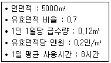
- 10.5m3/h
- 7m3/h
- 5.25m3/h
- 3.5m3/h
(정답률: 47%)
71. 어떤 실내의 취득열량 중 현열이 35000W이고, 잠열이 9000W 였다. 실내의 공기조건을 25℃, 50%(RH)로 유지하기 위해서 취출온도 10℃로 송풍하고자 한다. 이 때 현열비는?
- 0.6
- 0.8
- 1.9
- 3.9
(정답률: 66%)
72. 냉방부하 중에서 현열부하만 발생하는 것은?
- 인체의 발생열량
- 외기의 도입으로 인한 취득열량
- 틈새바람에 의한 취득열량
- 벽체로부터의 취득열량
(정답률: 53%)
73. 공조시스템의전열교환기에 대한 설명 중 틀린 것은?
- 공기 대 공기의 열교환기로서 현열만 교환이 가능하다.
- 공조기는 물론 보일러나 냉동기의 용량을 줄일 수 있다.
- 구조는 외기가 들어와서 급기되는 윗 부분과 환기가 배기되는 아래부분으로 나누어지고, 각각 덕트에 접속된다.
- 전열교환기를 사용한 공조시스템에 중간기(봄, 가을)를 제외한 냉방기와 난방기의 열회수량은 실내외의 온도차가 클수록 많다.
(정답률: 60%)
74. 구조가 간단하고 가격이 비교적 싸므로 건축설비에서 가장 많이 사용되는 전동기는?
- 직권전동기
- 유도전동기
- 동기전동기
- 직류전동기
(정답률: 67%)
75. 소형수동식 소화기는 소방대상물의 각 부분으로부터 1개의 소화기까지의 보행거리가 최대 몇 m이내가 되도록 배치하여야 하는가?
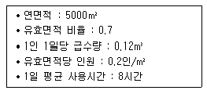
- 10m
- 20m
- 30m
- 40m
(정답률: 42%)
76. 급탕배관이 수압시험에 대한 설명으로 옳은 것은?
- 최고압력 이상의 압력으로 5분 이상 유지한다.
- 최고압력의 2배 이상의 압력으로 5분 이상 유지한다.
- 최고압력 이상의 압력으로 10분 이상 유지한다.
- 최고압력의 2배 이상의 압력으로 10분 이상 유지한다.
(정답률: 42%)
77. 경질 비닐관 공사에 대한 설명으로 옳은 것은?
- 온도 변화에 따라 기계적 강도가 변하지 않는다.
- 자성체이며 금속관보다 시공이 어렵다.
- 절연성과 내식성이 강하다.
- 부식성 가스가 발생하는곳의 배선에는 사용할 수 없다.
(정답률: 64%)
78. 다음 중 소규모의 공장에서 37kW 전동기부하에 공급할 때 가장 적합한 배전 방식은?
- 단상 2선식
- 단상 3선식
- 3상 3선식
- 3상 4선식
(정답률: 42%)
79. 동력설비의 감시 제어에서 고장표시를 나타내는 램프의 색은?
- 백색
- 오렌지색
- 적색
- 녹색
(정답률: 64%)
80. 사무소 건물에서 다음과 같이 위생기구를 배치하였을 때 이들 위생기구 전체로부터 배수를 받아들이는 배수수평지관이 관경으로 가장 알맞은 것은?
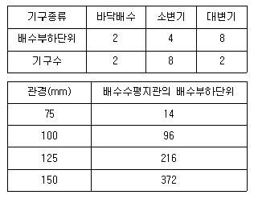
- 75mm
- 100mm
- 125mm
- 150mm
(정답률: 49%)
5과목: 건축법규
81. 건축법상 2 이상의 필지를 하나의 대지로 할 수 있는 토지가 아닌 것은?
- 각 필지의 지번지역이 서로 다른 경우
- 토지의 소유자가 다르고 소유권 외의 권리관계는 같은 경우
- 각 필지의 도면의 축척이 다른 경우
- 상호 인접하고 있는 필지로서 각 필지의 지반이 연속되지 아니한 경우
(정답률: 54%)
82. 건축물에 설치하는 지하층의 구조 및 설비에 대한 기준으로 옳지 않은 것은?
- 거실의 바닥면저기 50제곱미터 이상인 층에는 직통계단외에 피난층 또는 지상으로 통하는 비상탈출구 및 환기통을 설치할 것
- 바닥면적이 1천제곱미터 이상인 층에는 피난층 또는 지상으로 통하는 직통계단을 방화구획으로 구획되는 각 부분마다 1개소 이상 설치할 것
- 거실의 바닥면적의 합계가 5백제곱미터 이상인 층에는 환기설비를 설치할 것
- 지하층의 바닥면적이 300제곱미터 이상인 층에는 식수 공급을 위한 급수전을 1개소 이상 설치할 것
(정답률: 40%)
83. 건축물의 철거 등의 신고에 관한 기준 내용 중 옳지 않은 것은?(과련규정 개정 전 문제로 기존 정답은 1번이었습니다. 여기서는 1번을 누르면 정답 처리됩니다. 자세한 내용은 해설을 참고 하세요)
- 5층 이상이고 연면적 3,000m2 이상인 건축물을 철거시 위해방지계획서를 첨부해야 한다.
- 건축물의 소유자 또는 관리자는 그 건축물을 철거하는 경우 철거를 하기 전에 시장ㆍ군수ㆍ구청장에게 신고하여야 한다.
- 건축물의 소유자 또는 관리자는 그 건축물이 재해로 인하여 멸실된 경우에는 멸실 후 30일 이내에 신고하여야 한다.
- 허가대상 건축물을 철거하고자 하는 자는 철거계정일 7일 전까지 건축물철거ㆍ멸실신고서를 시장ㆍ군수ㆍ구청장에게 제출하여야 한다.
(정답률: 71%)
84. 다음 중 건축허가 신청시 에너지 절약 계획서를 제출하여야 하는 건축물은?
- 50세대인 기숙사
- 실내수영장으로서 당해 용도에 사용되는 바닥면적의 합계가 500m2인 건축물
- 병원으로서 당해 용도에 사용되는 바닥면적의 합계가 1,000m2 인 건축물
- 업무시설로서 당해 용도에 사용되는 바닥면적의 합계가 2000m2 인 건축물
(정답률: 28%)
85. 건설교통부장관이 정할 수 있는 시가화조정구역의 시가화유보기간의 범위는?
- 3년 이상 10년 이내
- 3년 이상 15년 이내
- 5년 이상 15년 이내
- 5년 이상 20년 이내
(정답률: 68%)
86. 다음 중 건축물의 대지에 공개공지 또는 공개공간을 확보하지 않아도 되는 건축물의 용도는? (단, 연면적의 합계가 5,000m2 이상인 경우)
- 위락시설
- 업무시설
- 운수시설
- 숙박시설
(정답률: 38%)
87. 도시관리계획결정의 고시가 있은 때 지적이 표시된 지형도에 도시관리계획사항을 명시한 도면을 작성하여야 하는데, 이 도면의 축척 기준은?(관련 규정 개정전 문제로 기존 정답은 3번 이었습니다. 여기서는 3번을 누르면 정답 처리 됩니다. 자세한 내용은 해설을 참고하세요.)
- 축척 3천분의 1 내지 5천분의 1
- 축척 1천500분의 1 내지 3천분의 1
- 축척 500분의 1 내지 1천500분의 1
- 축척 250분의 1 내지 500분의 1
(정답률: 67%)
88. 시장이 설치하는 노외주차자의 장애인전용주차구획 설치기준으로 옳은 것은?
- 주차대수 20대마다 1면의 장애인전용주차구획을 설치하여야 한다.
- 주차대수 30대마다 1면의 장애인전용주차구획을 설치하여야 한다.
- 주차대수 40대마다 1면의 장애인전용주차구획을 설치하여야 한다.
- 주차대수 50대마다 1면의 장애인전용주차구획을 설치하여야 한다.
(정답률: 42%)
89. 시가화조정구역의 지정 및 변경에 관한 설명으로 옳지 않은 것은?
- 시가화조정구역의 지정에 관한 도시관리계획의 결정은 시가화 유보기간이 만료된 날의 15일 후부터 그 효력을 상실한다.
- 도시지역과 그 주변지역의 무질서한 시가화를 방지하고 계획적ㆍ단계적인 개발을 도모하기 위하여 지정한다.
- 건설교통부장관은 시가화조정구역의 변경을 도시관리계획으로 결정할 수 있다.
- 건설교통부장관은 시가화조정구역의 지정을 도시관리계획으로 결정할 수 있다.
(정답률: 64%)
90. 각 용도별 건축물의 종류가 옳지 않은 것은?(오류 신고가 접수된 문제입니다. 반드시 정답과 해설을 확인하시기 바랍니다.)
- 의료시설 : 장례식장
- 제1종 근린생활시설 : 동물병원
- 문화 및 집회시설 : 자동차경기장
- 판매시설 : 상점
(정답률: 37%)
91. 6층 이상의 거실면적의 합계가 12000m2인 전시장 시설에 설치해야 할 승용승강기의 최소대수는? (단, 8인승 승강기 기준)
- 4대
- 5대
- 6대
- 7대
(정답률: 42%)
92. 다음 중 건축물이 용도변경시 분류된 시설군이 아닌 것은?
- 영업시설군
- 문화집회시설군
- 공업시설군
- 주거업무시설군
(정답률: 61%)
93. 건축법상 다중이용건축물에 해당되지 않는 것은?
- 16층인 판매시설
- 바닥면적 3,000m2 인 종합병원
- 바닥면적 5,000m2인 종교시설
- 20층인 관광숙박시설
(정답률: 62%)
94. 건축물이 있는 대지의 최소분할 면적이 작은 것에서 큰 것 순으로 옳게 나열한 것은?
- 주거지역 - 상업지역 - 녹지지역
- 공업지역 - 주거지역 - 상업지역
- 상업지역 - 녹지지역 - 주거지역
- 상업지역 - 주거지역 - 공업지역
(정답률: 42%)
95. 건축물 관련 건축기준의 허용오차의 범위가 2% 이내가 아닌 것은?
- 출구너비
- 반자높이
- 평면길이
- 벽체두께
(정답률: 55%)
96. 건축물의 열손실 방지를 위한 조치 중 지역별 건축물 부위의 단열재 두게 산정의 기준이 되는 것은?
- 열전도율
- 열관류율
- 실내온도
- 외기온도
(정답률: 57%)
97. 다음 중 공동주택의 개별난방설비 설치기준으로 옳지 않은 것은?
- 보일러의 연도는 내화구조로서 공동연도로 설치할 것
- 보일러실 윗부분에는 그 면적이 최소 1.0m2 이상인 환기창을 설치할 것
- 보일러를 설치하는 곳과 거실사이의 경계벽은 출입구를 제외하고는 내화구조의 벽으로 구획할 것
- 기름보일러를 설치하는 경우에는 기름저장소를 보일러 실외의 다른 곳에 설치할 것
(정답률: 56%)
98. 다음의 기계식 주차장의 설치기준에 관한 내용 중 ( )안에 알맞은 것은?
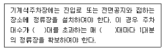
- 10
- 20
- 30
- 40
(정답률: 46%)
99. 학교시설ㆍ공용시설ㆍ항만 또는 공항의 보호, 업무기능의 효율화, 항공기의 안전운행 등을 위하여 필요한 용도지구는?
- 고도지구
- 보존지구
- 개발진흥지구
- 시설보호지구
(정답률: 66%)
100. 주차전용건축물의 대지면적의 최소한도는?
- 20m2 이상
- 30m2 이상
- 45m2 이상
- 60m2 이상
(정답률: 43%)